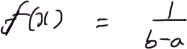
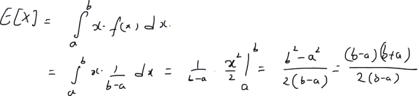
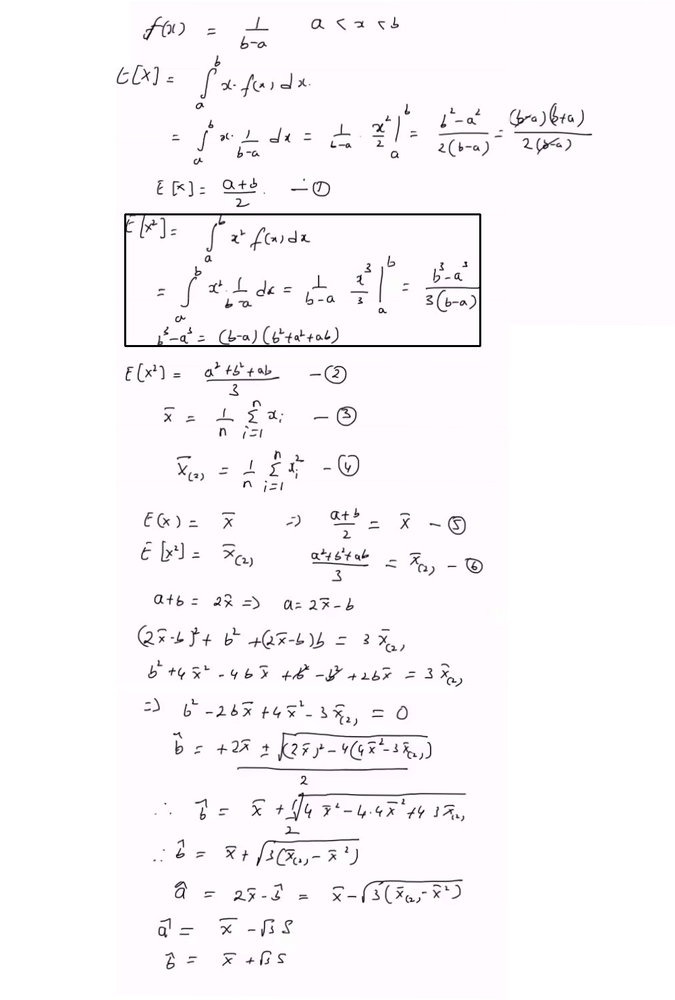
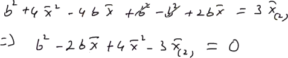

The first figure following the title shows a panoramic view of the entire lecture board. The following note presents figures and transcript in the order they appear in the lecture.
Moment method estimation
Hello, welcome. In this short video, let us look at the derivation of the estimators of the parameters of a uniform distribution using the method of moment.

Given the uniform distribution f of x equal to one by b minus a, for random variable x between the values of a and b.
Given the uniform distribution f of x equal to one by b minus a, for random variable x between the values of a and b. That is, the value, x is in the interval a comma b.
Given this uniform distribution, we want to derive estimators for the parameters, a and b using the method of moments. To start with, we derive the first two moments based on the PDF.

That is, expectation of x is given by integral a to b, x times f of x dx. equal to integral a to b, x times one by b minus a dx. equal to one by b minus a times x squared by two, and the limits are a to b equal to b squared minus a squared by two b minus a. Since b squared minus a squared equal to b minus a multiplied by b plus a, and the denominator is two times b minus a, therefore clearly, we can cancel these b minus a since a is greater than b.
Therefore, expectation of x equal to to the average of a and b, that is, a plus b by two. This is equation one.
Now we do that with the second moment.

Expectation of x squared equal to integral a to b, x squared times f of x dx. It's equal to integral a to b, x squared multiplied by one by b minus a dx which is equal to one by b minus a times x cubed by three, and the limits are a to b. equal to the numerator is b cubed minus a cubed, and the denominator is three times b minus a. Since b cubed minus a cubed equal to b minus a multiplied by b squared plus a squared plus a times b we have the second moment, expectation of x squared is equal to a squared plus b squared plus a times b by three.
Since b cubed minus a cubed equal to b minus a multiplied by b squared plus a squared plus a times b we have the second moment, expectation of x squared is equal to a squared plus b squared plus a times b by three.
This is equation two.
Now we note the expressions for the sample moment, that is the sample first moment is xbar, that is the mean. The sample mean equal to the one by n, summation i equal to one to the n times xi. This is equation three.
The sample second moment designated as xbar with subscript two equal to one by n, summation i equal to one to the n times xi squared This is sample second moment.
Equation four.
By using equations one to four, that is, expectation of x equal to equating it to the sample mean. Equating the second moment, Expecatation of x squared to the sample second moment. We have a plus b by two equal to xbar. Note that xbar are the mean, sample mean is given by equation three. For simplicity, we use this symbol. We also have the Expectation of x squared, that is, second moment defined as a squared plus b squared plus a times b by three equal to the sample second moment, xbar underscore two, the subscript two. Using these two equations, that is, solving the systems of the two equations, we can solve our a and b. From equation five, that is, this equation we have a plus b equal to two times xbar, which basically means that a equal to two xbar, or two times the sample mean minus b. By plugging-in this value in the equation six, that is, a equal to two xbar minus b in this equation six, we have two times xbar minus b squared plus b squared plus two xbar minus b times b equal to three times sample second moment.

Expanding these terms, we have b squared plus four times xbar squared, that is, square of the mean minus four times b by xbar plus b squared, that is this term. Then we have minus b squared, that is this term. Also we have plus two times b xbar equal to three times the sample second moment. Upon simplification, we have b squared, that is, this b squared and this b squared cancelled each other, we are left with b squared. Then we have minus four times b xbar plus two times b xbar, which is minus two times b xbar. Then we have four times xbar squared minus three times the sample second moment equal to zero.
If you look at this equation, this is basically a quadratic equation in b.
Therefore, the value of b is given by b equal to minus b, that is, minus the quotient of the linear term, the quotient of the first part of the term. That is, minus two times xbar plus or minus square root of b squared minus four a times c. That is, two by xbar squared minus four by one into this value, that is four times xbar squared minus three times xbar underscore two. That is the sample second moment. This is the two times a, which is two times one. Under the assumption both a and b are positives, we have bhat equal to. This should be positive. We have bhat equal to xbar plus square root of four times xbar squared minus four times four xbar squared plus four times three times xbar two. That is the sample second moment by two. Therefore, the bhat equal to... The estimator of b is given by xbar plus... This four can be taken outside, and it cancels with two. We are left with three times the sample second moment minus three times the square the mean. This equal to square root of three times sample second moment minus three times the square of the mean.
We have mean squared. Therefore, this is the estimator of b.
While using this relation, that is, a equal to xbar minus b, we also have an estimator, a. ahat equal to two times xbar minus bhat equal to xbar minus square root of three times xbar underscore minus xbar squared. You can note that the value within the parenthesis is clearly the variance of the sample, that is, the difference between the second moment on square root of the mean, which is basically the variance of the sample.
Therefore, our uniform distribution variable should be random. The estimators of the unknown parameters a and b are given by combinations of mean and standard deviation of the sample.
That is, ahat equal to the sample mean, xbar minus square root of three times the standard deviation, S of the sample.
Similarly, bhat equal to xminusbar plus square root of three times the standard deviation of the sample.
Therefore, the estimators of a and b are basically linear combinations of sample mean and sample standard deviation. Thanks for watching.